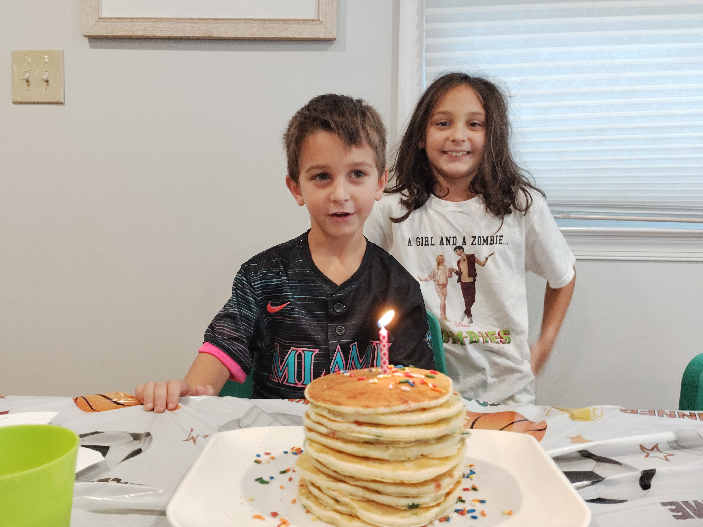

Dad's Pancakes

Description
This is my family's favorite pancake recipe. We make them for special occasions, especially
birthdays, but also whenever we have a lazy weekend morning at home.
It is fast and easy to make. I like them best with a little bit of syrup and butter.
However, ours kids always want to fancy them up by adding chocolate chips or sprinkles to the batter.
Hope you enjoy!
Ingredients
- 3 cups flour
- 2 tbsp sugar
- 2 tbsp baking powder
- .50 tsp salt
- 2 eggs
- 4 cups milk
- 4 tbsp butter, melted
- 2 tsp vanilla extract
Steps
- Take a bowl and whisk together the dry ingredients: flour, baking powder, sugar, and salt.
- In a separate bowl mix together the wet ingredients: egg, ilk, melted butter, and vanilla.
- Combine and whisk the wet and dry ingredients. Do not overmix, stop when you have small lumps and let batter rest for a few minutes
- While you wait, preheat and butter your griddle or skillet to medium-high heat. Enjoy some coffee.
- Take a quarter cup measuring container use that to scoop from your batter and onto the griddle or skillet
- Wait until you see bubbles and little holes emerge on the pancake, then flip it and wait until golden brown
- Stack them as high as you can and eat them while they're warm with your favorite toppings.
Home